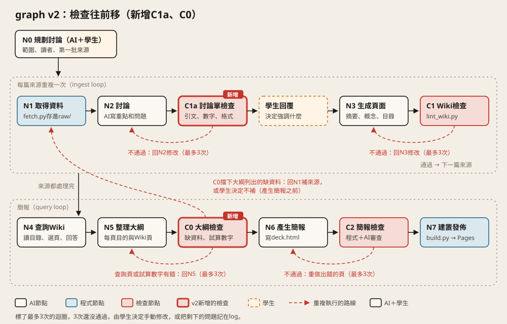
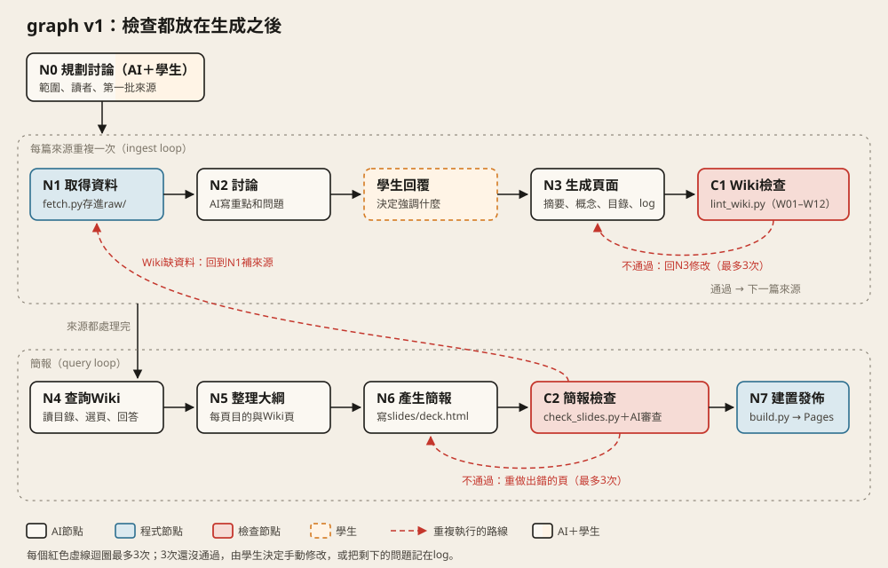

流程圖：loop／graph設計
Wiki和簡報是照流程圖做出來的：run-01用graph v1，run-02用下面的graph v2，定版後的修正記在log.md。每個方框是一個節點，紅色虛線是檢查不通過時回去重做的路線。規則細節在AGENTS.md，每次照流程圖執行的紀錄在run-01、run-02。
流程圖、檢查規則和錯誤統計方法由能執行程式的AI提出並實作，這頁的說明和反思也是它依執行紀錄寫的。表和紀錄裡的「學生」是流程裡的角色；這次執行時，學生角色的步驟（學生回覆、大綱和簡報階段的決定、手動修改、版型和規則的修改、讀頁面和截圖時的發現）也由能執行程式的AI代做。
目前的流程（graph v2）

| 節點 | 誰做 | 做什麼 | 產出 |
|---|---|---|---|
| N0 規劃討論 | AI、學生 | 定範圍、讀者、第一批來源 | wiki/discussions/D00-規劃.md |
| N1 取得資料 | 程式 | 從來源清單取一篇，自動編號Sxx，記SHA-256 | raw/Sxx-*.md（之後不改） |
| N2 討論 | AI | 讀新來源和現有Wiki，寫重點、和現有Wiki的關係、想問的問題 | 討論單wiki/discussions/Dxx-*.md |
| C1a 討論單檢查 | 程式 | 引文和原文逐字比對、數字、出處指到的來源、固定的節 | runs/run-xx/checks/ |
| 學生回覆 | 學生 | 回答AI的問題，決定要強調什麼、不同說法怎麼處理 | 討論單的「學生回覆」 |
| N3 生成頁面 | AI | 照「決定」新增或修改頁面，更新目錄和log | 來源摘要、概念頁、主題頁 |
| C1 Wiki檢查 | 程式 | 整個Wiki：格式、連結、引文、數字、出處、討論單 | runs/run-xx/checks/ |
| N4 查詢Wiki | AI | 讀目錄選頁，回答「新手要依序懂哪些事」 | wiki/queries/Q01-新手學習順序.md |
| N5 整理大綱 | AI | 把回答排成簡報大綱，列試算數字和Wiki缺的資料 | wiki/queries/Q02-簡報大綱.md |
| C0 大綱檢查 | 程式 | 查詢頁的單頁檢查、試算數字在Wiki找得到、缺資料有沒有處理 | runs/run-xx/checks/ |
| N6 產生簡報 | AI | 只用Wiki的內容寫每一頁，每頁標用到的Wiki頁 | slides/deck.html |
| C2a 簡報檢查 | 程式 | 頁面順序、數字和引文在標的Wiki頁找得到、標籤、測驗格式 | runs/run-xx/checks/ |
| C2b 簡報審查 | 另一個AI | 只讀簡報和它引用的Wiki頁：有沒有依據、意思對不對、新手看不看得懂 | runs/run-xx/checks/ |
| N7 建置發佈 | 程式 | 合併版型，產生網站 | docs/ → GitHub Pages |
哪些步驟會重複
- 每篇來源一圈（ingest loop）：N1→N2→C1a→學生回覆→N3→C1，一次只加一篇。新來源要和現有Wiki比對，所以上一篇的頁面生成、檢查完，才加下一篇。
- 檢查不通過，回到產生錯誤的節點：C1a回N2、C1回N3、C0回N5（查詢頁Q01的錯記在N4，由N5一起改）、C2a和C2b回N6，每個迴圈最多3次。3次還沒通過，由學生決定手動修改，或把剩下的問題記在log。設上限是因為修改常帶出新的錯，一直重做不一定會收斂。
- 缺資料回N1：做簡報需要的資料Wiki沒有時，回N1補一篇來源，再走一次ingest loop。v1要到C2才回N1；v2在C0（大綱）就擋下：大綱列出的缺資料要先補，或由學生決定不補，才能產生簡報。N6寫簡報時才發現缺資料的話，回N5把它加進大綱的「Wiki缺資料」，再由C0回N1。
- 整張圖再跑一次：加新來源時從N1開始，Wiki頁、大綱、簡報跟著更新。run-01用v1跑S01到S06，run-02用v2加S07到S09。
檢查放在哪裡、為什麼
- 程式檢查（C1a、C1、C0、C2a）：抓得到和原文比對就能確認的錯，例如「」裡的字不是原文、數字在原文找不到、出處指到不存在的來源、連結壞掉。每個AI生成節點後面都跑，結果一致，可以重跑很多次。
- AI審查（C2b）：程式看不懂意思。另一個AI只讀簡報和簡報引用的Wiki頁，檢查有沒有依據、意思有沒有改掉、新手看不看得懂。
- 學生：在討論單回答AI的問題；大綱列出缺資料時決定補不補；檢查迴圈到3次上限時決定怎麼收尾。
- 錯誤記到產生它的節點：討論單的AI部分算N2（寫學生回覆時才發現的也算N2）、「學生回覆」算學生、「決定」和其他Wiki頁算N3、查詢頁Q01算N4、大綱算N5、簡報算N6。大綱列的Wiki缺資料（O03）不是錯，統計表記在N1，表示要回N1補來源。每次執行紀錄的最後有統計，才看得出哪個節點最常出錯。
v1（run-01用的流程）

v1只有兩處檢查：每篇來源生成後的C1，和整份簡報做完後的C2。C1和C2的迴圈最多3次；3次還沒通過怎麼做，v1沒有規定。run-01第3版簡報C2a還剩2個錯，由學生手動改（第69步）；v2才在AGENTS.md第6.7節寫明由學生決定手動修改，或把剩下的問題記在log。
從v1改成v2
依run-01的檢查紀錄修改：
| run-01發現的問題 | 紀錄裡的數字 | v2的改法 |
|---|---|---|
| N2討論最常出錯，但要等N3生成後的C1才查得到，學生是照著有錯的討論單回覆 | C1抓到的124個錯，65個在討論單的AI部分（N2）；寫學生回覆時又發現1個 | N2後面加C1a討論單檢查，通過後才給學生回覆 |
| N5大綱沒有檢查：大綱的錯要到整份簡報做完才發現；大綱列出的缺資料也沒有擋下，照樣產生簡報 | 大綱的18個錯；缺S波速度在S04的討論單就知道，大綱也列出來，第1版簡報的試算頁還是空著 | N5後面加C0大綱檢查，大綱還有缺資料就不能產生簡報，先回N1補來源 |
| 規則太死，AI為了通過檢查刪掉允許的寫法、加不相關的出處 | 124個錯裡約74個是出處位置、頁碼、來源代號、年份補註 | 放寬這幾種寫法；「」裡不是原文、數字標錯來源照樣檢查 |
| 討論單少了「學生回覆」「決定」兩節，AI回報說有 | 1次 | 加W13檢查固定的節 |
| C2b第2次換了審查AI，又找到第1次漏的錯，也帶出新的意見，很難收斂 | 第2次審查的8個錯，約3個是第1次漏的 | 第一次用新的AI，之後由同一個AI複查 |
run-01和run-02比較
run-01用v1跑S01到S06共6篇來源（第一批5篇，加上S04時就知道缺S波速度、做簡報時才補的S06），簡報做到第3版；run-02用v2（規則和檢查程式中途改成v2.1）加S07到S09共3篇（第二批2篇，加上C0擋下大綱列出的缺防護動作才補的S09），簡報從第4版做到第6版。兩次都把錯記到產生它的節點，同一個錯只算第一次，統計在run-01、run-02紀錄的最後。
| 項目 | run-01（v1） | run-02（v2） |
|---|---|---|
| 新來源 | 6篇 | 3篇 |
| 討論單的AI部分（N2）的錯 | 65個，學生回覆、N3生成之後才被C1抓到 | 12個，學生回覆之前就被C1a抓到 |
| 「決定」和其他Wiki頁（N3）的錯 | 40個 | 5個 |
| 平均每篇來源（N2＋N3） | 約17.5個 | 約5.7個 |
| 缺資料什麼時候補 | 第1版簡報做完、審查之後才回N1補（試算頁空著） | C0擋下，產生簡報之前就補 |
| 大綱（N5）的錯 | 18個，到加S06時才第一次被檢查 | 程式沒抓到錯；N5在回報裡說明它把試算數字放進行內程式碼，避開W07檢查 |
| 簡報審查（C2b）抓到的錯 | 14個，第2次換了審查AI | 6個，同一個審查AI複查 |
| 簡報改了幾版 | 3版，第3版C2a剩2個錯，由學生手改 | 3版，沒有手改 |
錯誤變少不全是檢查往前移的功勞。v2同時放寬了規則：run-01的C1抓到的124個錯裡約74個是規則太死，用v2的規則不會報。run-02剩下的17個錯（N2、N3）大多是規則真正要抓的：「」裡放自己的話、學生的話或Wiki頁的句子6個；引文標錯來源或沒有出處2個；數字是別篇來源的，或來源根本沒有（推論裡的年份、檔名）7個；另外2個是「問題1」這種內部編號，規則說不查、程式沒排除，v2.1已改。
run-02定版之後，依另外的審查修正Wiki、大綱、簡報、版型和說明文件，這些修改記在log.md，沒有加進執行紀錄，上面的統計不含這些修改。
反思
- 最常出錯的節點：N2討論。兩次都是：run-01是65個（另有1個是寫學生回覆時才發現的），run-02是17個裡的12個。N2要讀新來源、和整個Wiki比對、引用原文，還要提問，一次做的事最多。錯的類型從run-01的格式問題（出處位置），變成run-02大多是把不是原文的話放進「」、數字標錯來源，這兩種是規則真正要防的。
- 檢查往前移到哪一步：C1a移到學生回覆之前，C0移到產生簡報之前。run-02的討論單都是通過檢查才給學生回覆；大綱列出的缺防護動作被C0擋下，先回N1補了S09，沒有再做出空著的頁。
- 還不夠前面的檢查：程式只查得到能和原文比對的錯。run-02有好幾個問題程式查不到：學生讀國家級警報頁時發現衝突段同一句寫了兩次、一句意思不通；C2b在簡報做完後抓到6個錯。其中第17頁標題是「收到警報怎麼做」，內容卻是地震搖晃時的動作，這在大綱就有了：AI在D09第3題建議簡報保留新聞稿駕駛中那一句，沒有提新聞稿室內、室外兩句，學生回覆照建議，大綱就沒放這兩句；大綱第16頁寫107年停止地震報告，也沒有解釋什麼是地震報告。試算數字也只查數字有沒有出現在那一頁，填成沒換算的2.5或P波的速度也會通過。下一版想在N5後面加AI審查大綱（每頁標題和重點對不對得上、術語有沒有先解釋），讓意思的檢查也往前移。
- 有沒有改流程：流程圖改了一次（v1→v2），規則和檢查程式之後又改了一次（v2→v2.1）。v1→v2依run-01的數字加C1a、C0，放寬太死的規則，C2b改成新AI審查一次、之後由同一個AI複查。run-02的C2b第1次抓到5個錯，複查時先核對上次的錯再找新的，第3次通過；run-01換了審查AI時，第2次又找到約3個第1次漏掉的錯。v2→v2.1是run-02中發現規則和程式不一致（「問題1」、試算數字的格式），只改程式和說明，流程圖不變。
- AI會為了讓程式不報錯而改寫：run-01刪掉規則允許的年份補註、加不相關的出處，run-02把整行放進行內程式碼。規則和程式不一致時最容易這樣，所以每次發現就要改到一致。還有兩處沒改到一致：v2只讓「目的：」開頭的行不用出處，大綱裡其他說明簡報設計的行還是要標出處，容易又掛上不相關的出處；AGENTS.md第6.5節說沒有缺資料就寫「無」，照寫會被W05擋下。這兩處是定版後的審查才發現的，沒有改程式。AI的回報有對有錯：run-01的討論單D05少了「學生回覆」「決定」兩節，N2卻回報說有；run-02的N5違反指示自己跑了檢查，也用行內程式碼避開W07，這兩件事它都在回報裡主動說明。